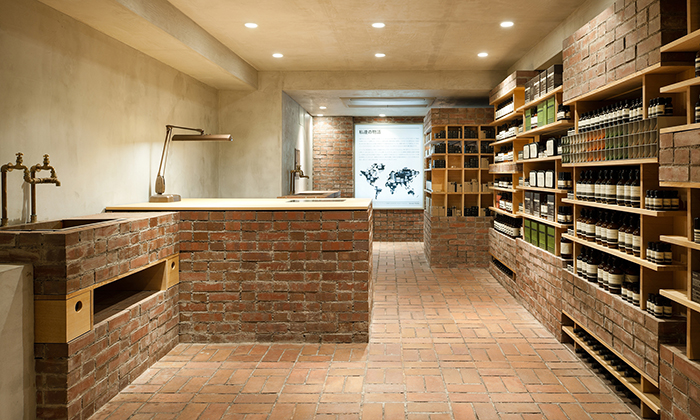
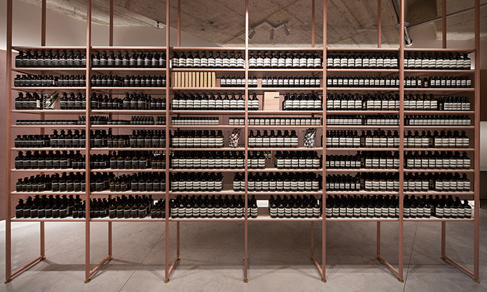

이솝 스토리
이솝은 1987년 멜버른에서
설립되었습니다. 최고 품질의 스킨, 헤어
그리고 바디 제품을 만들어 내는 것이 변함없는 이솝의 목표입니다
설립되었습니다. 최고 품질의 스킨, 헤어
그리고 바디 제품을 만들어 내는 것이 변함없는 이솝의 목표입니다
content3
-  /*


-  */
Aesop”은 창립 후 30년 동안 전세계 각지에 여러 스토어를 오픈해왔습니다. 그 과정에서 예상치 못했던 다양한차이점을 발견하게 되었는데, 이를 이해하고 절충하는 과정에서 오히려 깊은 친밀감과 조화로움을 경험할 수 있었습니다. 일례로,새로운 지역에 완벽하게 동화되거나 지역 특유의 소재를 탐구하는 기쁨을 느꼈습니다. 또한 해당 지역의 문화와 역사에 참여하면서새로운 감정을 느끼기도 했으며, 다양한 파트너들과 새로운 관계를 형성하며 깊은 유대감을 경험했습니다. 차이를 포용하고 조화를이루는 것은 비솝의 고유한 철학입니다.이솝은 2004년 멜버른 교외의 세인트 킬다 작은 지하 코너에서 최초의 고객을 맞이했습니다. 이곳은 지하 주차장으로 이어지는 좁은비탈길에 위치한 작은 스토어였지만, 현재는 이솝 건축과 디자인의 기준점이 되었습니다. 이솝은 새로운 스토어 오픈을 준비할 때이미 그 장소에 있는 것을 어떻게 활용하고 협력할지를 가장 먼저 염두에 둡니다. 또한 과거, 현재, 미래에 대한 고민을 함께 하며조심스럽게 스토어 오픈을 계획합니다. 지역과 어울리지 않는 공간이 되기 보다는, 그 지역의 거리 속 한 구성원으로 조화롭게 가치를더하는 것이 우리의 진정한 의의입니다. 따라서 지역과 연관성 있는 디자인 요소를 활용하기 위해 심혈을 기울입니다.
Aesop texonomy of design”이솝의 디자인에 대한 남다른 접근법과깊이가 담겨있는 본 웹사이트에서는 크리에이티브 개발 과정, 스토어에 사용된 독특한 건축자재 등 풍부한 내용이 담겨 있습니다.더불어 이솝과 콜라보레이션을 해 온 디자이너 및 건축가들에 대한 내용을 모두 이 곳에서 찾아볼 수 있습니다. 그 동안 멜버른,오슬로, 교토, 파리, 뉴욕 등 전세계 각지에서 이솝과 함께 작업해온 저명한 건축가와 디자이너들의 인터뷰 영상도 확인해 보시기바랍니다. 영상은 브라질 출신 영화감독 페드로 콕(Pedro Kok)이 함께 했습니다.이솝은 지적이고 지속가능한 디자인에 대하여 진정성있는 관심을 가지고 있으며, 이는 이솝의 모든 분야에서 보여집니다. 모든 제품성분에 치밀한 연구가 기본이 되듯, 제품 용기를 선택할 때 또한 쉽게 사용할 수 있고 우리 눈에도 아름다우면서도 실용성을 중시한용기들을 선택하고 있습니다. 이솝은 심사숙고하여 만들어진 디자인은 우리의 삶을 개선시킨다는 확고한 믿음이 있습니다.